血管遍布人体，是输送血压和完成营养物质转换的重要“管道”。随着我们年龄的增长，血管会自然衰退老化，增加心血管疾病发生的风险。但如果我们在日常
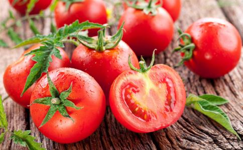
西红柿不仅各种维生素含量比
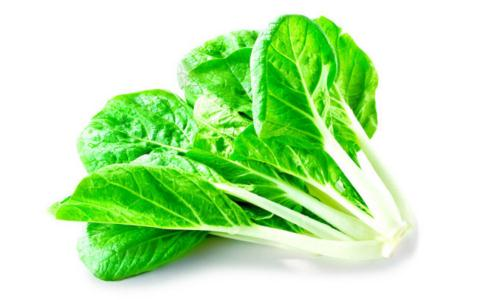
小
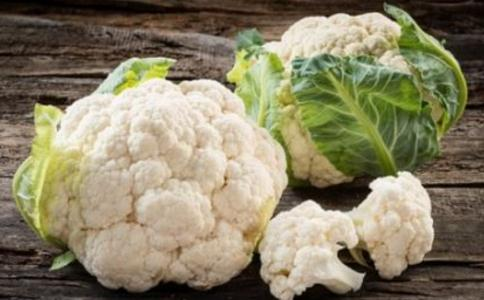
中医素来有“白色入肺”之说，洁白的菜花无疑是一种适时的保健蔬菜，不但能预防感冒等呼吸道疾病，还是一种非常好的血管清理剂。
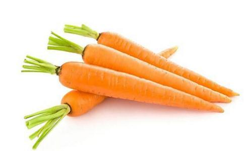
胡
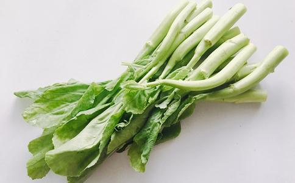
芥蓝具有降低胆固醇，软化血管，预防心脏病等功效。
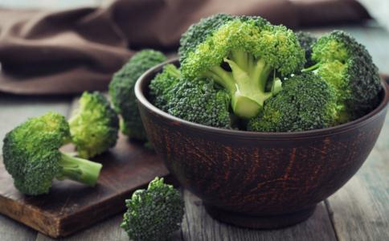
西兰花是含有类黄酮最多的食物之一，类黄酮除了可以防止感染，还是最好的血管清理剂，能够阻止胆固醇氧化，防止血小板凝结，因而减少心脏病与中风的危险。
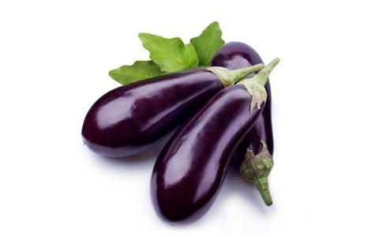
茄子含丰富的维生素P，是一种黄酮类化合物，有软化血管的作用，还可增强血管的弹性，降低毛细血管通透性，对防止毛细血管出血有一定作用。
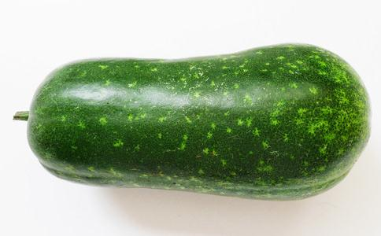
冬瓜有利尿消肿、清热、止渴、解毒的作用。经常吃冬瓜，不但可以减少体内的脂肪含量，对动脉硬化、冠心病、糖尿病也有着良好的疗效。
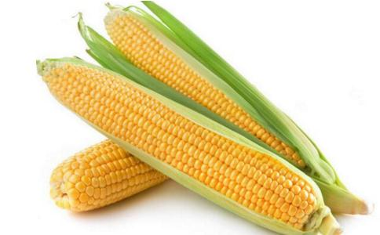
玉米富含脂肪，其脂肪中的不饱和脂肪酸，特别是亚油酸的含量高达60%以上。有助于人体脂肪及胆固醇的正常代谢，可以减少胆固醇在血管中的沉积，从而软化动脉血管。
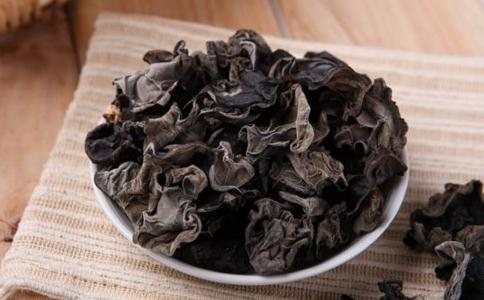
现代医学认为，
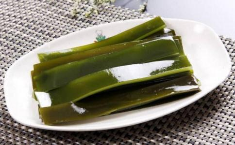
海带中含有丰富的岩藻多糖、昆布素，这类物质均有类似肝素的活性，既能防止血栓又有降胆固醇、脂蛋白、抑制动脉粥样硬化的作用。
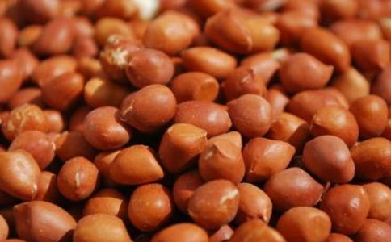
花生米：清理血管壁花生米含不饱和脂肪酸，它有清理血管壁的作用，还能帮助软化血管、控制血压和血脂。
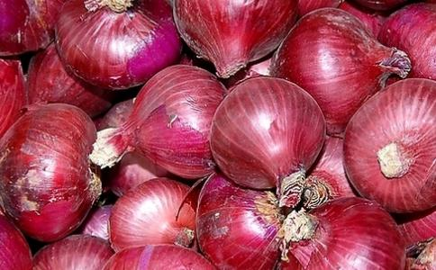
洋葱：抗动脉硬化洋葱含有一种能使血管扩张的前列腺素A，它能舒张血管，降低血液黏度，减少血管的压力，同时洋葱还可增强纤维蛋白溶解的活性，具有降血脂，抗动脉硬化的功能。